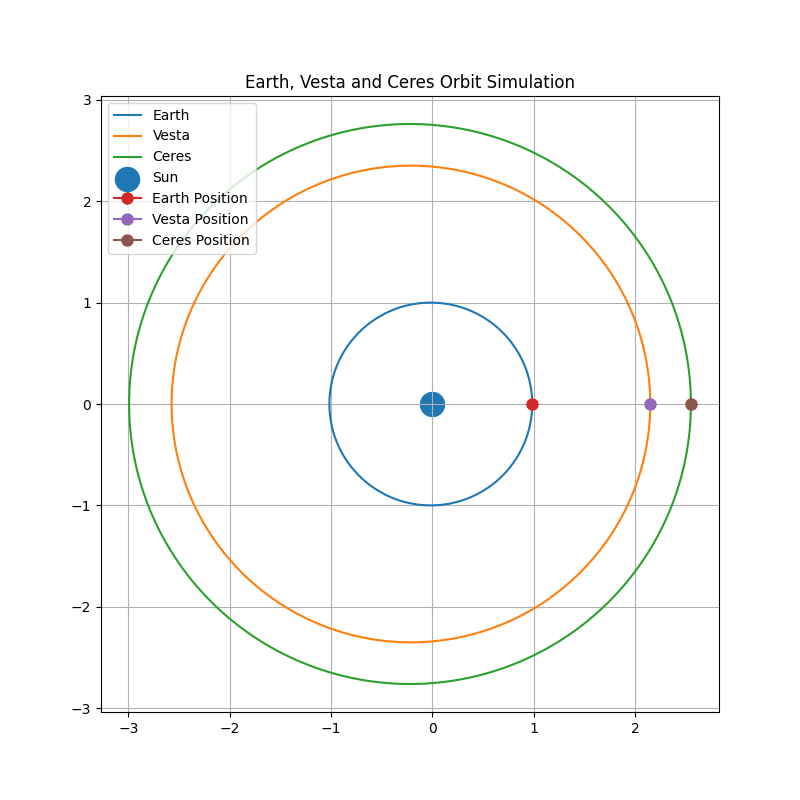
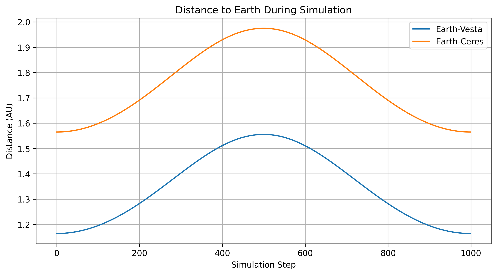

🎯 Mission Objective
Simulate and visualize planetary and asteroid orbits using real orbital parameters and Keplerian orbital mechanics.
☄️ Simulated Objects
🌍 Earth
☄️ 4 Vesta
☄️ 1 Ceres
📈 Orbital Statistics
Objects Simulated: 3
Largest Orbit: Ceres
Shortest Period: Earth
📊 Orbital Parameters
Earth: 1.00 AU | 1.00 year
Vesta: 2.36 AU | 3.63 years
Ceres: 2.77 AU | 4.61 years
🌞 Solar System View

☄️ Orbit Simulation

🎞️ Orbit Animation

⚠️ Closest Approaches
Earth–Vesta: 1.164 AU
Earth–Ceres: 1.565 AU
Vesta reaches a smaller minimum distance from Earth than Ceres during the simulation.
📏 Distance Analysis

🧠 Scientific Conclusion
Orbital simulations of Earth, Vesta, and Ceres were performed using Keplerian orbital parameters. The results reproduce the expected elliptical trajectories and demonstrate how orbital size influences orbital period according to Kepler's Third Law.
Distance analysis shows that Vesta approaches Earth more closely than Ceres during the simulated interval, reaching a minimum separation of 1.164 AU compared with 1.565 AU for Ceres. These calculations illustrate how orbital mechanics can be used to predict asteroid positions and evaluate potential close approaches.
🚀 Future Work
- Animate orbital motion over time
- Add additional Main Belt asteroids
- Simulate Near-Earth Objects (NEOs)
- Calculate closest approaches to Earth
- Develop an interactive 3D Solar System visualization